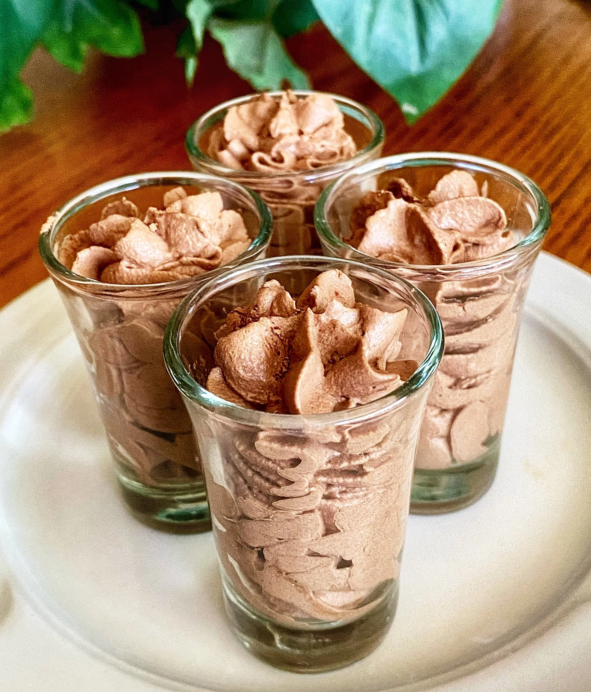

Cocoa Powder Chocolate Mousse

Mousse served in shot glasses is perfect for when you're craving something sweet but just want a small portion. You can enjoy them as soon as you make them, or you can chill them in the fridge for a cooler dessert.

10min
Ingredients
- ½ cup heavy whipping cream
- 2 tablespoons unsweetened cocoa powder
- 2 tablespoons powdered sugar
- ¼ teaspoon vanilla extract
- 1 pinch salt
Making
- Combine heavy whipping cream, cocoa powder, powdered sugar, vanilla extract, and salt a large bowl and beat with an electric mixer until stiff peaks form.
- Pipe mousse into 6 shot glasses. Serve immediately or chill until serving.
Home